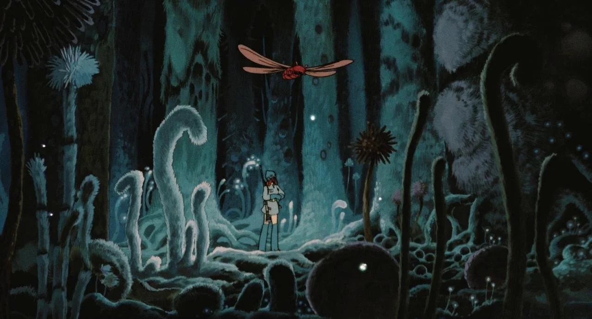

tillunarpunk
I recently learned about lunarpunk and I can’t stop thinking about it. It’s solarpunk’s nocturnal brethren, cyberpunk’s more utopian twin.
I’ve always been a fan of solarpunk ethos and aesthetic. It has this mix of sun-drenched anarchy and verdant optimism. Sustainability, solar panels, solutions for false scarcity, smart cities, self-sustaining societies. That’s solarpunk. It looks washed out, contrasting, dominated by greens and blues.
Lunarpunk retains the optimism and glow of solarpunk, but thrives at night. It swaps sunlight and green gardens for moonlight and bioluminescence. It feels more introspective and individualistic, more quiet. The aesthetic is still nature-based but celebrates the lesser seen vibrancy of the night: glowing purples and teals of mushrooms and bacteria.

Hayao Miyazaki is most known for his richer solarpunk-friendly style, but Nausicaä of the Valley of the Wind-his first film before founding Ghibli-explores a lot of this lunarpunk concepts.
A lamp powered by bioluminescent bacteria. A beautiful object by designer Teresa van Dongen.
Lunarpunk shares a lot of visual common ground with cyberpunk. The etherial glow against a dark background and individualistic rebellion. Cyberpunk is fascinated by self-reliance, assembled computers (cyberdecks), and a blurred boundary between man and machine. Lunarpunk shares the self-reliance, but with a focus on sustainable balance and a blurred boundary between man and nature. It replaces cyberpunk’s alienation with belonging, domination with decentralization, survival with sanctuary, dystopia with utopia. Instead of imagining living covertly within corporate-dominated mile-high neon advertisements, it imagines living integrated into a decentralized commune with a very-alive nature.